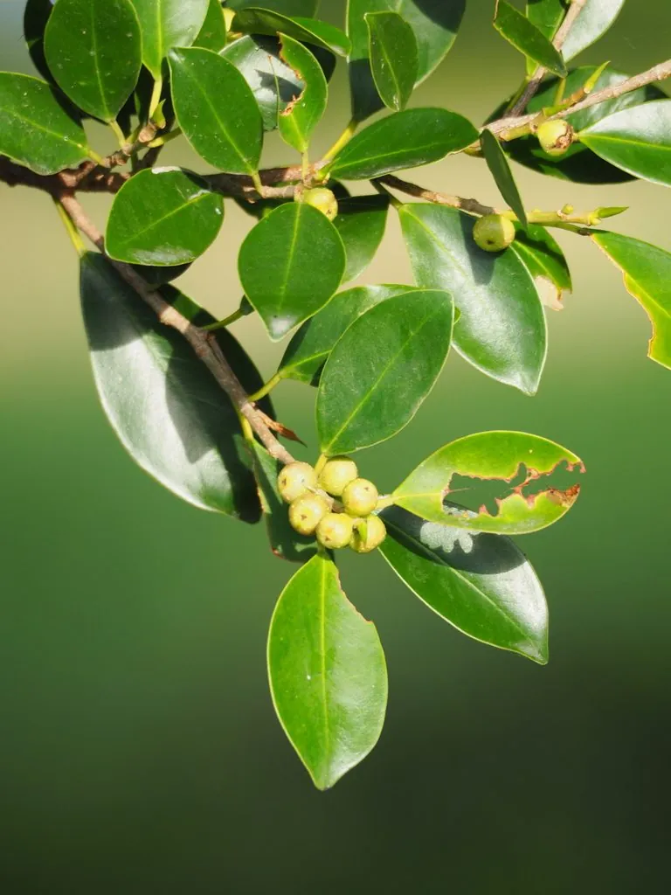

乔木 · 植物界
榕树 Ficus microcarpa

华南常见的常绿大乔木，气生根垂落入土后形成“独木成林”奇观，是南方村口与公园的标志性树木。
- 分类
- 门被子植物门纲木兰纲目蔷薇目科桑科属榕属
- 栖息环境
- 海拔 800 米以下的热带亚热带平原、村旁与河岸，喜温暖湿润
- 地理分布
- 中国广东、广西、福建、海南、云南等地，东南亚、南亚广泛分布
- 保护级别
- 暂无评估；中国未列入国家重点保护野生植物名录
物种志
榕树为常绿大乔木，高可达 20 m，树冠庞大呈伞形；树皮灰褐色而平滑；枝条上生出大量气生根，下垂如须，接触土壤后逐渐加粗成为支柱根，形成“独木成林”的独特景观。叶片互生，椭圆形或倒卵形，革质光亮，先端钝尖；隐头花序生于叶腋，果实为榕果，球形、成熟时橙红色，内有大量细小瘦果。
榕树原产中国华南、西南及东南亚，喜温暖湿润与充足光照，不耐寒，适宜疏松肥沃的酸性土壤，在广东、福建、广西的村口与庙宇旁常见数百年古榕。榕果是多种鸟类与昆虫的食物，榕属植物与榕小蜂之间形成专性传粉关系，是协同进化的经典案例。树皮纤维可制绳索，气生根与叶可入药，树姿雄伟，是南方城市重要的园林与遮荫树种。
形态与习性
- 株高可达 20 m，冠幅可达 30 m
- 花果期全年可陆续开花结果
- 光照喜光，也耐半阴
- 水分喜湿润，不耐长期干旱
- 土壤疏松肥沃的酸性壤土
- 繁殖扦插、压条与种子繁殖
- 主要用途遮荫树、盆景、气生根与叶入药
趣味知识
- 榕树的气生根垂到地面后扎入土中，逐渐增粗成为支柱根，一棵树能长成一片“树林”。
- 榕果其实是隐头花序，花朵藏在果实内部，由榕小蜂钻入授粉。
- 广东新会有一棵约 400 年树龄的古榕，覆盖面积超过 1 万平方米，被称为“小鸟天堂”。
- 榕树在热带雨林中常作为绞杀植物，气生根缠绕寄主树干争夺光照。
生态关系
- 共生 ← 榕小蜂 榕树依赖榕小蜂传粉